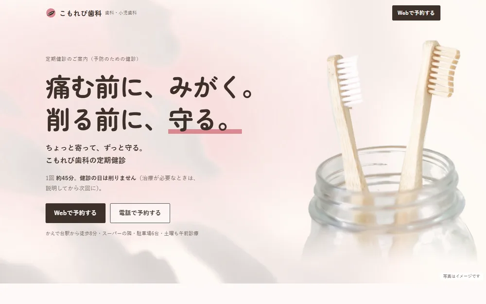
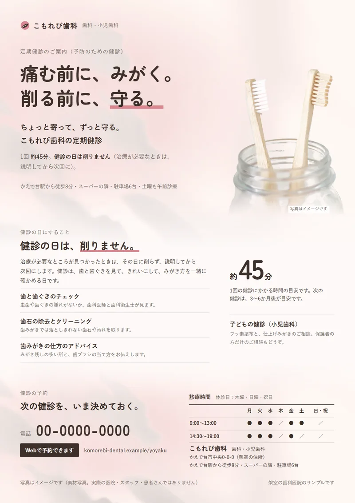
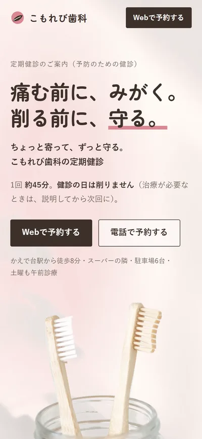

制作の解説｜案内LP・バナー・チラシ・歯科医院
歯科医院の定期健診セット
「治療が終わると、定期健診に戻ってこない」という想定の依頼に、
定期健診の案内LP・バナー3案・院内とご近所に置くチラシで答えました。

LP（PC）

チラシ

LP（スマホ）
- 業種
- 歯科医院（歯科・小児歯科）の定期健診の案内
- 制作物
- 定期健診の案内LP（ホワイトニングの段あり）、バナー3案（1080×1080・1200×628）、院内とご近所に置くチラシ（A4片面）
- 担当範囲
- キャッチコピー・構成・文章・デザイン・コーディング・写真選びと加工・印刷用データ
- 使ったもの
- HTML / CSS / JavaScript（バナーとチラシもHTML/CSSで組んで書き出し）
※実際の募集の形をまねた架空の依頼をもとに、練習として制作したサンプルです。医院名・住所・電話番号・URLはすべて架空です。費用などの数字は、医院からいただく数字を入れる枠の形で示しています。
※写真は素材サイト（Unsplash）のイメージです。実際の医院・スタッフ・患者さんの写真ではありません。スマホに映っている予約画面は、制作側で作った架空のものです。
完成したLPを見る